Here are some quick facts about Uttarakhand.
Capital
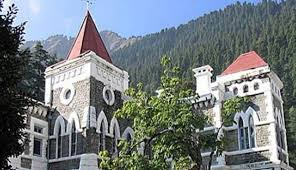
Dehradun is currently the "Provisional Capital" of the State. Nanital serves as the "Judicial Capital" as the High Court (in inset) of the state is situated here. Gairsain (in Chamoli) is the "Proposed Capital" of the State.
Governor
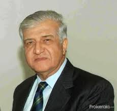
The governor of Uttarakhand is appointed by the President of India for a term of five years, and holds office at the President's pleasure. The governor is de jure head of the state government; all its executive actions are taken in the governor's name. However, the governor must act on the advice of the popularly elected Cabinet of Uttarakhand, headed by the Chief Minister of Uttarakhand, who thus hold de facto executive authority at the state-level. The Constitution of India also empowers the governor to act upon his or her own discretion, such as the ability to appoint or dismiss a ministry, recommend President's rule, or reserve bills for the President's assent. The governor of Uttarakhand has his official residence at the Raj Bhavan in the state capital
of Dehradun. Six people have served as the state's governor, five are men including one woman Margaret Alva who became the 1st female governor of Uttarakhand in 2009. Surjit Singh Barnala was the first Governor of the state. Presently, Krishan Kant Paul(in inset) serves as the Governor of the state.
Chief Minister
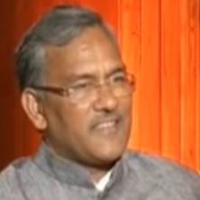
The Chief Minister of the State of Uttarakhand, is the head of the Government of Uttarakhand. As per the Constitution of India, the Governor of Uttarakhand is the state's de jure head, but de facto executive authority rests with the chief minister. Following elections to the Uttarakhand Legislative Assembly, the governor usually invites the party (or coalition) with a majority of seats to form the government. The governor appoints the chief minister, whose council of ministers are collectively responsible to the assembly. Given that he has the confidence of the assembly, the chief minister's term is for five years and is subject to no term limits. Eight people have served as the state's chief minister, first being Nityanand Swami. Currently, Trivendra Singh Rawat (in the inset) is the CM of the State.
Chief Justice of Uttarakhand
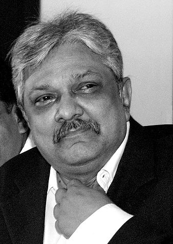
The Chief Justice of Uttarakhand is the highest presiding judicial officer and the custodian of the Uttarakhand High Court. He is appointed by the President
of India with the advice of Chief Justice of India and the Governor of Uttarakhand. K. M. Joseph is the current Chief Justice of the Uttarakhand High Court.
State Animal-Alpine musk deer
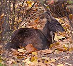
The Alpine musk deer (Moschus chrysogaster) is a musk deer species native to the eastern Himalayas in Nepal, Bhutan and India to the highlands of Tibet.
The Alpine musk deer recorded in the Himalayan foothills is now considered a separate species, the Himalayan musk deer. It is the state animal of Uttarakhand.
State Bird-Himalayan Monal
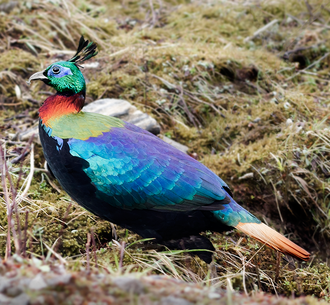
The Himalayan monal (Lophophorus impejanus), also known as the Impeyan monal, Impeyan pheasant, is a bird in the pheasant family, Phasianidae. It is the national bird of Nepal, where it is known as the danphe, and state bird of Uttarakhand India, where it is known as the monal. It was also the state bird of Himachal Pradesh until 2007.
State Flower-Brahma Kamal
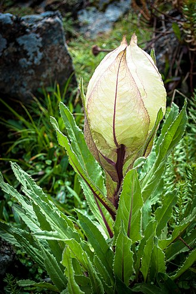
Brahma Kamal (Saussurea obvallata), s a species of flowering plant in the Asteraceae. It is native to the Himalayas and Uttarakhand, India, northern Burma and southwest China. In the Himalayas, it is found at an altitude of around 4500 m. It is the state flower of Uttarakhand.
State Tree-Burans
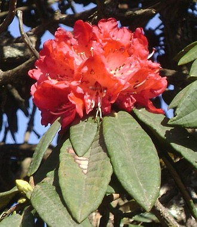
Rhododendron arboreum, the tree rhododendron, also known as burans or gurans, is an evergreen shrub or small tree with a showy display of bright red flowers. It is found in Bhutan, China, India, Myanmar, Nepal, Sri Lanka, Pakistan and Thailand. Rhododendron arboreum is the national flower of Nepal; in India it is the state tree of Uttarakhand and state flower of Himachal Pradesh and Nagaland.
State Symbol
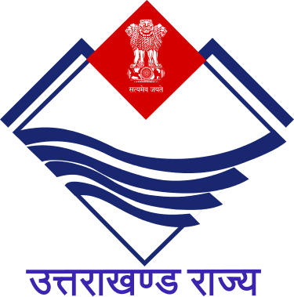
The Emblem of Uttarakhand is a diamond-shaped emblem of white background and blue borders supported by the stylized mountain peaks of the Himalayas with four streams charging from the left to right. The National Emblem of India, Sarnath Lion Capital is superimposed on a small red background on its crest with
the national motto in Devanagari, "सत्यमेव जयते" (Satyameva Jayate, Sanskrit for "Truth Alone Triumphs") is presented below. At the bottom of the seal it reads
"उत्तराखण्ड राज्य" (Hindi for "State of Uttarakhand") having inscribed in blue fonts. The red background on the top represents the blood of statehood activists who lost their lives during the course of Uttarakhand statehood movement, while the white background represents the peaceful nature of the Uttarakhandi people. The mountains represent the geography and ecology of the Himalayan state and the four streams represent the big four rivers of the state; Ganga, Yamuna, Kali and Ramganga. Blue colour symbolizes purity of water attributed to the holy rivers of Uttarakhand.
State Anthem (Official)
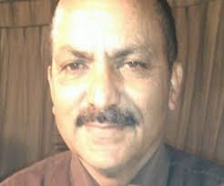
'Dev Bhumi Matre Bhumi, Shat Shat Vandan Abhnandan' is the official State Song of Uttarakhand. The nine-minute song highlights diverse social cultural life of the hill state and is modelled on the national song, 'Vande Mataram'. The song is written by Hemant Bisht (in inset).
State Game-Football
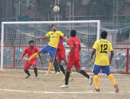
Football is the official state sport of Uttarakhand.
State Song-Bedu Pako (Unofficial)
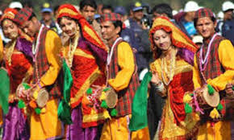
Bedu Pako (lit. Berries do ripen) is an Uttarakhandi folk song which was conceptualised and written by Brijendra Lal Shah. It was composed by Mohan Upreti and B. M. Shah and to date has been come out in numerous versions, seen and heard by Uttarakhandis across the globe. It was played on stage for the first time in 1952 at Government Inter College, Nainital. The song became popular when it was sung and played in Teen Murti Bhavan in honour of an international gathering. Then Prime Minister of India Jawaharlal Nehru chose this song as the best of folks among other participants from India, and Mohan Upreti became Bedu Pako Boy. The recording on HMV were given to the guests as Souvenir. This song was one of the Favourite song of first Prime Minister of India, Jawaharlal Nehru. Recently, in the honor of all who gave this folk song an international fame and to make Uttarakhand folk available all around the world 24X7, an online radio, which is one of the only and very first online radio of Uttarakhand available on web, was created by the name of Bedu Pako.
State Poet-Sumitranandan Pant
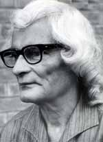
Sumitranandan Pant (20 May 1900 – 28 December 1977) was an Indian poet. He was one of the most celebrated "Progressive" left-wing 20th century poets of the Hindi language and was known for romanticism in his poems which were inspired by nature, people and beauty within. Pant was born in Kausani village, Bageshwar District in what is now the state of Uttarakhand, into an educated middle-class Brahmin family.
Brand Ambassador
Indian Cricket Team Captain, Virat Kohli is the Brand Ambassador of the Uttarakhand Tourism. The tagline is "Simply Heaven".